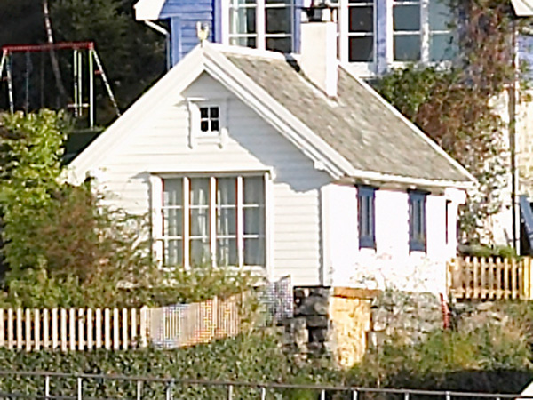

The Annex was set up in this location in 1900 with timber from a much
older building. It was used as a shed for about a century, before we
turned it into an intimate house for living in the 1990s. Totally
renovated i 2005 with new kitchen and bathroom.
The Annex contains living room, kitchen, bedroom on the loft,
bathroom. The house is small, but practically fitted. There are 2
comfortable beds in the loft, and 2 beds on a sleeping coach in the
living room. Extra matrasses on request. All floors water heated. The
Annex has its own part of the garden with a nice view to the sea.
Booking:
The Annex is available at Airbnb for short stays, listed as
Seafront refuge close to Bergen
Off season we offer affordable rates for monthly stays or
longer.
Send us your message at
annex@hanevik.no
Updated: 12.04.2023